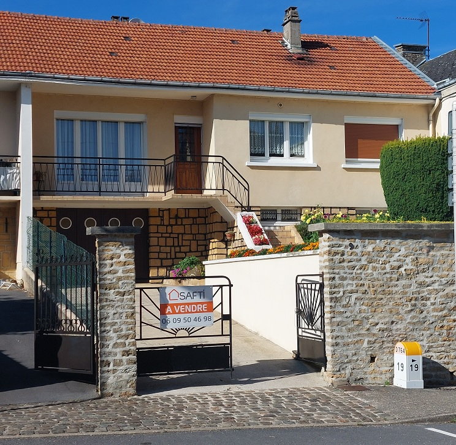
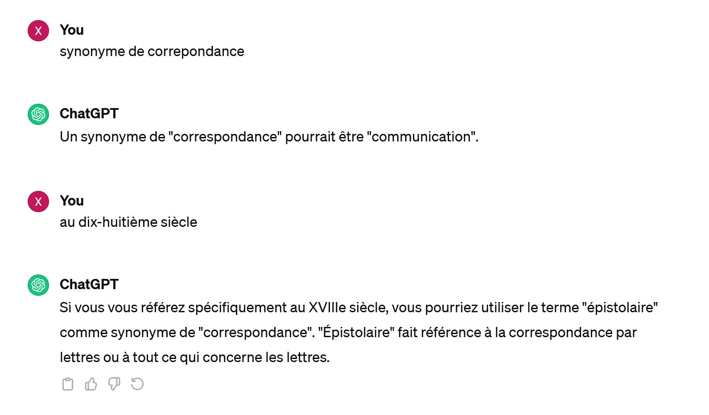

2023¶
…, 21/12/2023
Quand ton voisin, celui qui tient cloisonné chez toi depuis un an à cause des odeurs de bruit si fort qu’il est impossible d’ouvrir une fenêtre, brûle. Alors je pense à ce film : Nous irons tous au paradis. Quelques autres images ici ` <https://www.youtube.com/watch?v=m_Rt_hWOowc>`_.
…, 21/12/2023
Je suis ce je suis aujourd’hui. Ce soir je vous vois. Je vous ecoute. Sans cela j’aurais été le même demain.
…, 20/08/2023 (2023)
Invariablement, chaque dimanche d’été, elle sortait son transat après le café, retournait dans la chambre pour en ressortir en bikini un livre à la main. Invariablement, il sortait la tondeuse. Il n’avait pas fini de détourer la terrasse qu’elle lui demandait : « tu t’ennuies mon chéri ? » « Non, pourquoi ? », répondait-il. Elle enchaînait « On fait l’amour ? » Il acceptait sans peine. Puis au milieu de l’effort, elle lui glissait « Mais tu arrêtes la tondeuse. » Tous leurs enfants étaient nés en mai. Il avait bien essayé de passer la tondeuse d’intérieur - plus simplement l’aspirateur - l’hiver mais cela n’avait jamais marché.
…, 20/08/2023 (2023)
Petite maison au bord de la rivière. Monsieur pêche. Madame tricotte. Monsieur prend du bide. Madame prend de la culotte.
…, 21/08/2023 (2023)
C’est l’image d’une maison comme beaucoup de maisons qui ont poussé en périphérie de vieux centres villes de petites villes ardennaises.
Je suppose qu’elle n’a pas coûté trop cher à constuire. Mais elle n’a aucun charme. Elle n’est pas en pierre non plus, ces vieilles pierres qui protègent de la chaleur par temps de canicule. Tout est à refaire.
…, 15/11/2023 (2023)
J’avoue ne pas tout comprendre des débats autour de l’aide médicale. Loi immigration : tout comprendre du débat autour de l’Aide médicale d’Etat (AME). Les conséquences à moyen terme sont rarement évaluées. Si refuser de soigner peut sans doute faire faire quelques économies à l’Etat français à court terme, que deviennent ces personnes à l’hôpital qui doivent refuser de soigner et ces personnes à qui on refuse. Suppression de l’AME : 3.500 médecins menacent de désobéir si l’aide médicale d’Etat disparaît. Je ne me vois pas refuser de répondre à la question d’un étudiant à la fin d’un cours parce que j’estime que je ne suis pas assez payé. Et quel jugement porterait-il face à cette réponse qui lui paraîtra injuste et arbitraire ? Je doute que l’élève en question devienne violent mais qu’en est-il de la personne qui se voit refuser des soins. Que fait-elle quand sa survie est en jeu ? Deviendra-t-elle violente ? Cette violence pourrait se déclencher à tout moment, blesser d’autres personnes, avoir des conséquences bien plus graves que les soins réfusées. Est-ce que les agressions quotidiennes, petites mais répétées, ne deviennent pas de plus grandes agressions. Un peu comme la pluie.
…, 16/11/2023 (2023)
J’ai regardé beaucoup de séries cette année au détriment des livres. Je perds des mots. Je m’en rend compte tous les jours. Je sais qu’ils existent et j’ai besoin d’une intelligence artificielle pour les retrouver.
Navrant et magnifique…